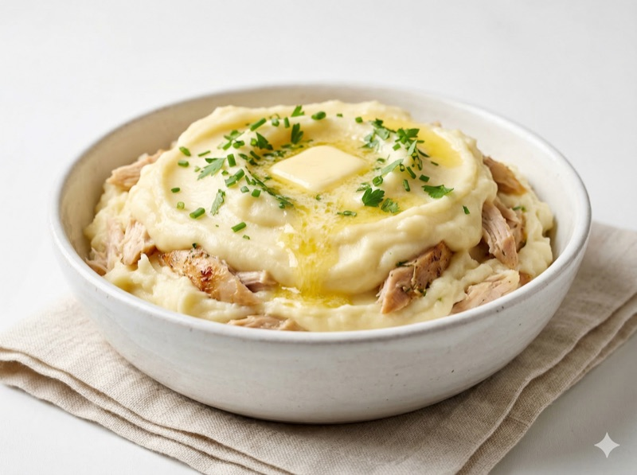
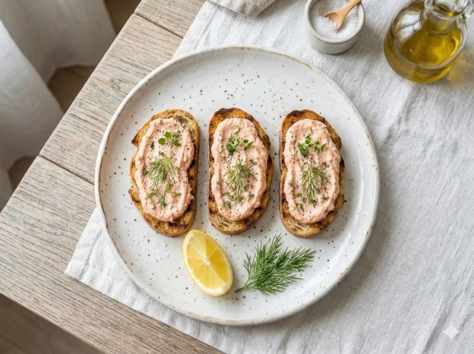
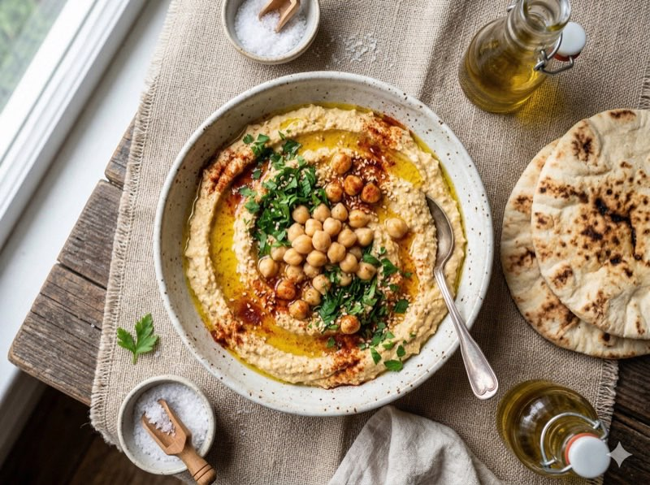
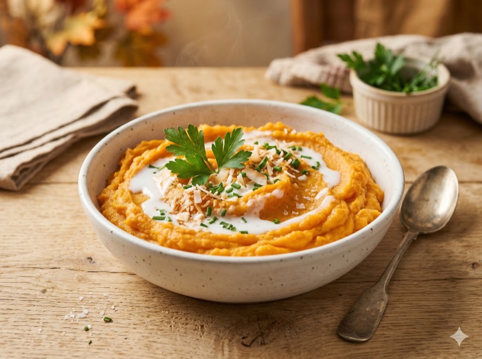
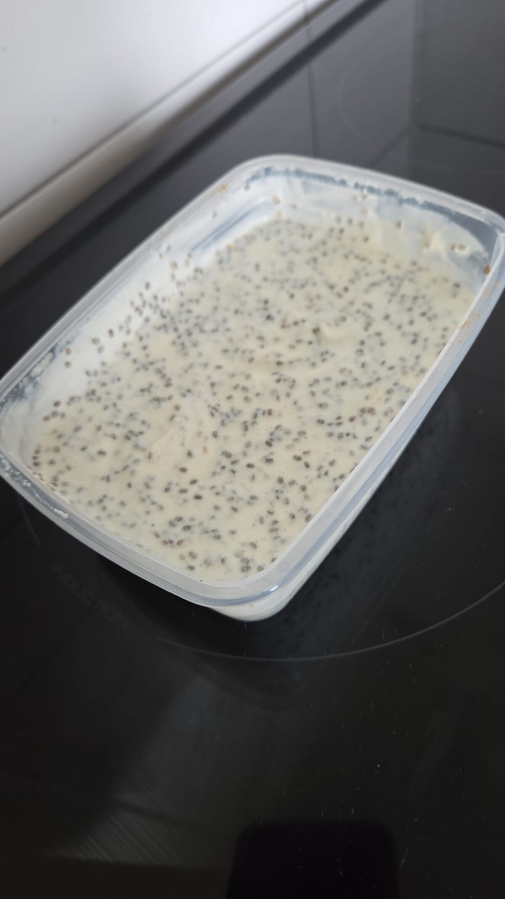
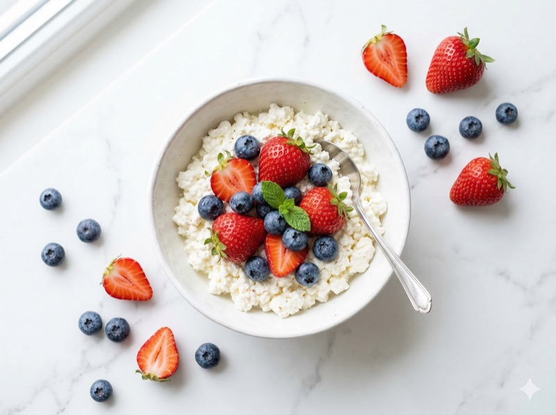

🥘 Gepureerde fase: week 3-4 na de operatie
In de gepureerde fase mag je zachte, gemixte voeding eten. Geen stukjes, geen harde texturen , maar wel meer smaak dan in de vloeibare fase. Porties van 100-150g per maaltijd. Kauw goed en eet langzaam. Raadpleeg altijd je bariatrisch team voor persoonlijk advies.

Kip-aardappelpuree met courgette
Smakelijke puree die aanvoelt als een echte maaltijd. 24g eiwit per portie.

Zalmpuree met ricotta
Romige zalmpuree vol omega-3 en eiwit. Klaar in 15 minuten.

Hummus met zachte groente
Plantaardige eiwitten in een gladde puree. Veelzijdig en makkelijk te maken.

Zoete aardappelpuree met kip
Warme puree met kokosmelk en kurkuma. Vol vitamines en eiwit.

Kwark chia pudding
Romig en zoet zonder suiker. 27g eiwit per portie, klaar na een nacht in de koelkast.

Cottage cheese met fruit
Fris ontbijt of tussendoortje met gepureerd fruit. 18g eiwit in 5 minuten.